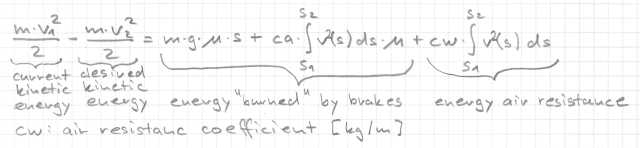
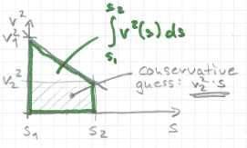
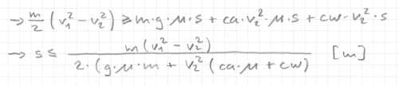
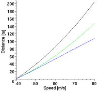

3.5 Advanced BrakingIntroductionThis section is about braking with aerodynamic forces. Because we have aerodynamic downforce and drag we will be able to brake later. That was also the reason of the brake "flickering" on high speeds. Because more energy is absorbed than we expect, we reach the goal speed too early, so we stop braking. A moment later we are again too fast, and need to brake again, and so on... Don't run away because of the scary formulas, they are not too hard to understand. Braking Distance

Let's have a look at this funny equation. You already know the first three terms on the
left from section 3.2 ("brakes 1"). We still have to burn the energy difference in the
brakes. The second term from the right describes the additional energy we can "burn" in
the brakes caused by the downforce which acts on the wheels.
Because the speed changes over the braking distance I formulate it with an integral.

The rightmost term describes the
energy which is used by the drag. The drag is like the downforce a function of the squared
speed, so we also need an integral.
Because I had no idea how to solve this equation for
s (=s2-s1, so one could also put the first term on the right into an integral), I will present
an approximation. Meanwhile I found the optimal solution. |
|  |
Computing Drag Coefficient CWYou can see that we need to compute an additional coefficient. It's quite similar to the computation of the wingca in initCa(...), so here it is, put it in driver.cpp: /* Compute aerodynamic drag coefficient CW */
void Driver::initCw()
{
float cx = GfParmGetNum(car->_carHandle, SECT_AERODYNAMICS,
PRM_CX, (char*) NULL, 0.0);
float frontarea = GfParmGetNum(car->_carHandle, SECT_AERODYNAMICS,
PRM_FRNTAREA, (char*) NULL, 0.0);
CW = 0.645*cx*frontarea;
}
You need to define initCw() and CW also in driver.h: void initCw();
float CW; /* aerodynamic drag coefficient */
Add the call of initCw() at the end of newRace(...) in driver.cpp: initCw(); Implementing the new FormulaReplace the following line in getBrake(), driver.cpp float brakedist = (currentspeedsqr - allowedspeedsqr) / (2.0*mu*G); with float brakedist = mass*(currentspeedsqr - allowedspeedsqr) /
(2.0*(mu*G*mass + allowedspeedsqr*(CA*mu + CW)));
Take a Ride

This time the improvement is small, on e-track-4 we win around one second. It's because
our formula works only well for small speed differences at high speeds. If you want better
results you need to split the range of [v1..v2] into more intervals or implement the
analytic solution. The left picture shows braking from 80 [m/s] down to
40 [m/s] and the braking distances computed with the old method (black), the new method
(green) and an
almost perfect integrated solution (blue). You can get good results already with 5 intervals.
You could also try to implement Romberg integration. |
Good NewsI finally found an analytic solution. Look it up here. DownloadsIn case you got lost, you can download my robot for TORCS 1.2.0 or later. Summary
|
|
Back |
Traction control, anti wheel locking, ... |